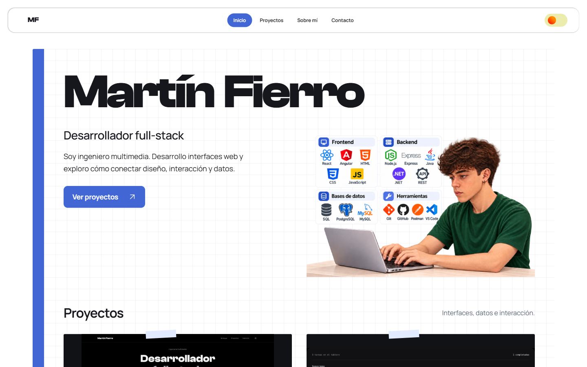
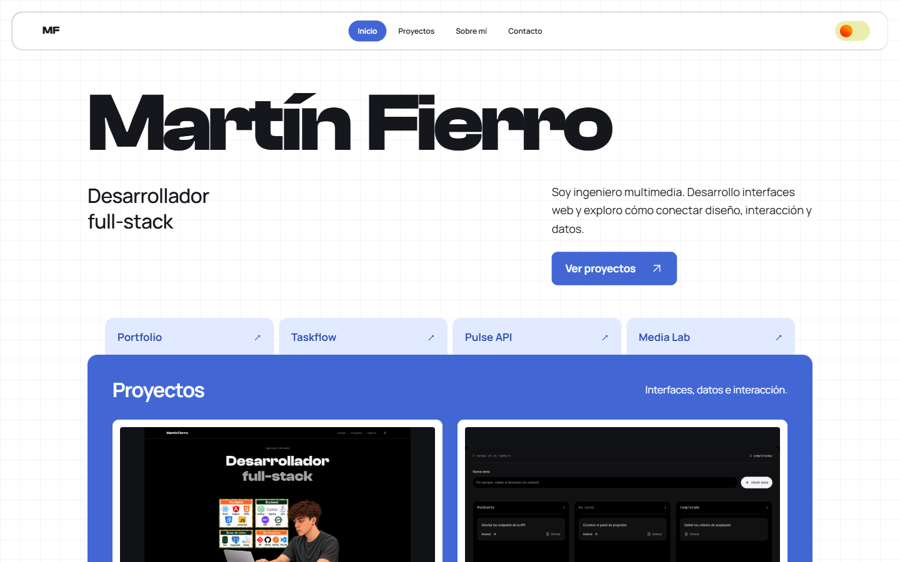
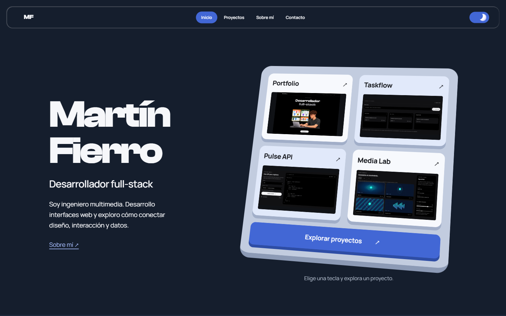

Cuaderno de trabajo
Nombre protagonista, papel cuadriculado y unas pocas capturas sujetas como notas. La más cercana a tu portfolio actual.
Abrir boceto ↗Tres bocetos propios a partir de tus referencias. Mantienen la paleta azul y marino, las fuentes originales, el interruptor de tema y tu ilustración sin modificar la cara. En cada opción puedes abrir la página y probar el cambio de tema.

Nombre protagonista, papel cuadriculado y unas pocas capturas sujetas como notas. La más cercana a tu portfolio actual.
Abrir boceto ↗
Cuatro pestañas del mismo nivel y una carpeta azul que organiza el trabajo. Personalidad a través de la composición.
Abrir boceto ↗
Cuatro teclas, cuatro proyectos. El guiño más juguetón, manteniendo la presentación personal directa.
Abrir boceto ↗Solo propuestas visuales: los archivos de la aplicación no se han cambiado en esta exploración. Las capturas completas muestran la página entera.